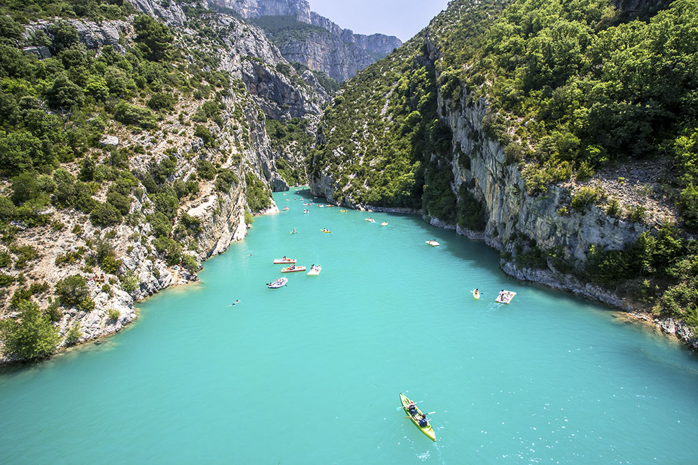
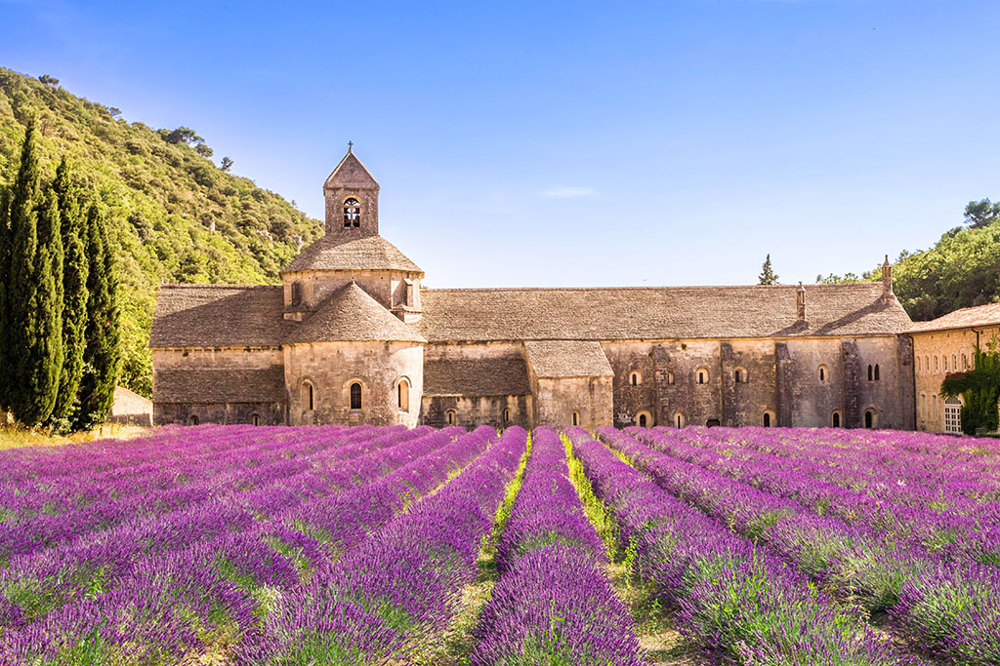
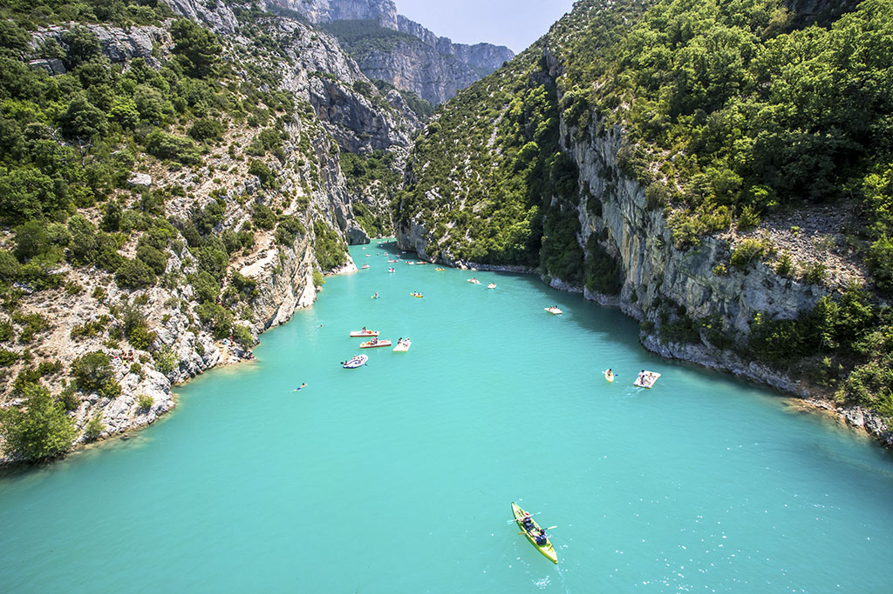
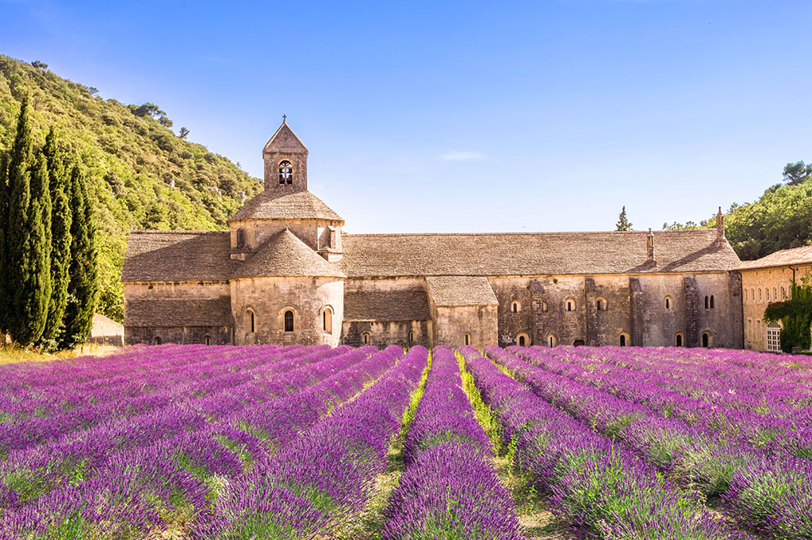
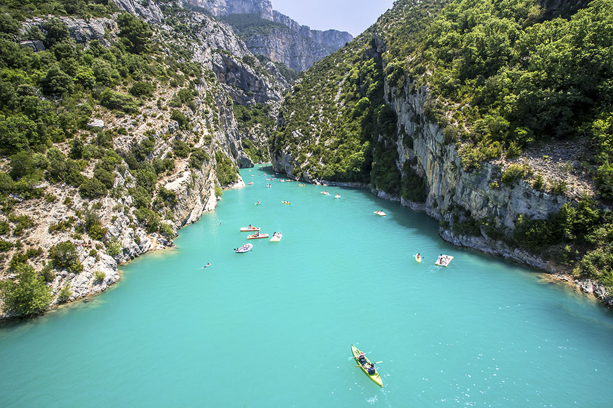
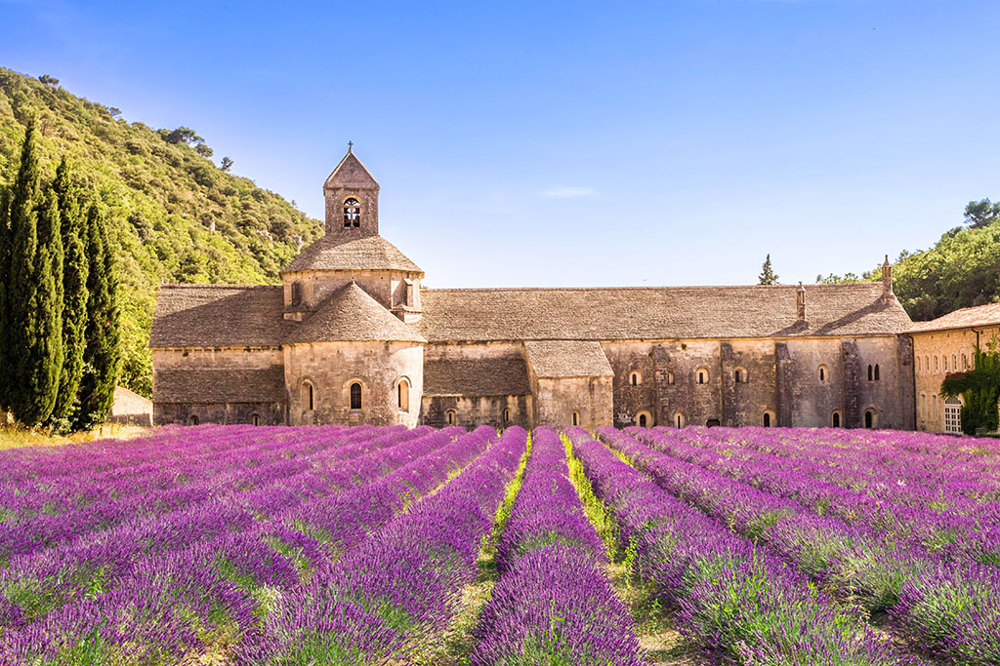
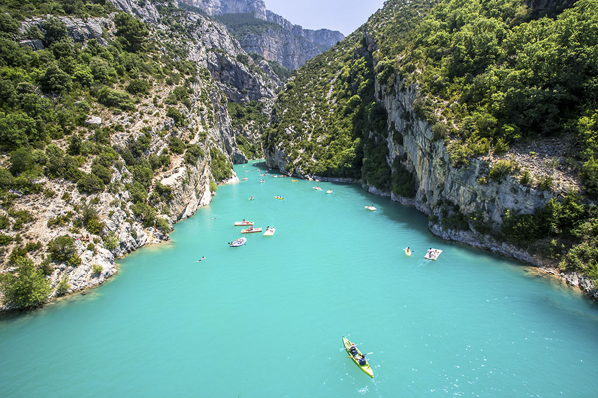
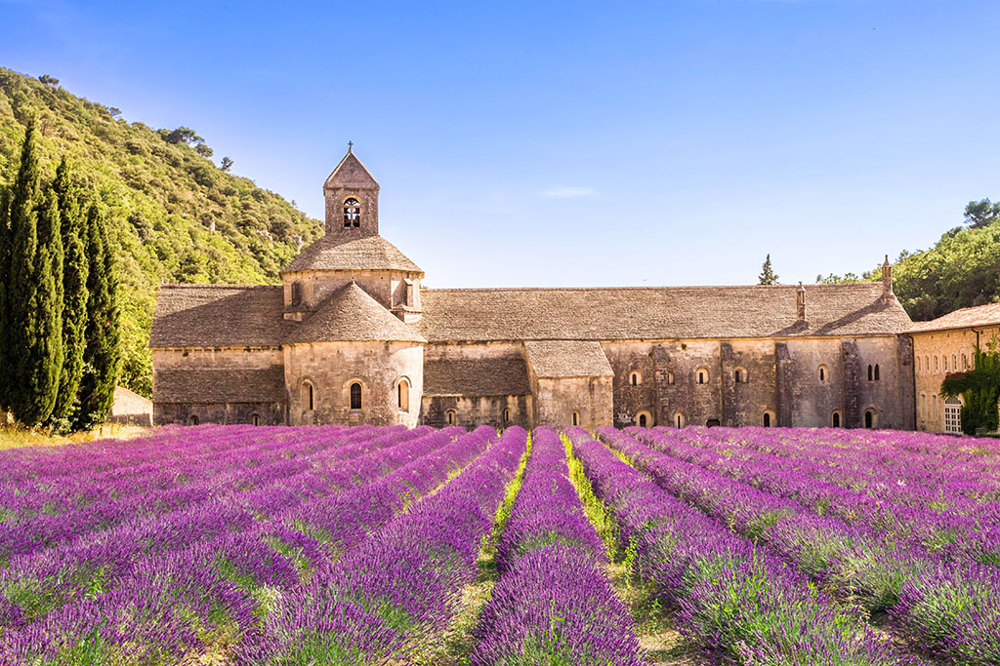

Découvrez la France, un pays aux mille facettes et aux charmes infinis ! La France est une destination de voyage incontournable qui offre une variété incroyable de paysages, de cultures et d'expériences. Des villes romantiques aux villages pittoresques, des sommets alpins aux plages méditerranéennes, ce pays regorge de trésors qui ne manqueront pas de vous émerveiller. Alors partons ensemble à la découverte des trésors naturels et culturels de la France en sillonnant ses marchés, ses musées et ses espaces naturels, attablons-nous à ses meilleures tables et séjournons dans ses plus charmants hôtels, visitons ses plus beaux villages, et savourons la beauté de l’existence.
Nichée sur la côte basque de la France, Biarritz est une destination balnéaire élégante et dynamique qui allie le charme traditionnel d'une station balnéaire historique à une atmosphère moderne et cosmopolite. Avec ses plages de sable fin, ses vagues parfaites pour le surf, ses paysages à couper le souffle et sa riche culture basque, Biarritz est un véritable joyau de la côte atlantique. La ville est célèbre pour sa plage de la Grande Plage, un lieu incontournable où vous pourrez vous détendre au soleil, vous baigner dans les eaux rafraîchissantes de l'océan ou profiter des nombreuses activités nautiques proposées, telles que le surf, la planche à voile et le paddle.
En savoir plusSituée sur la côte d'Azur française, Nice est une destination incontournable qui allie glamour, histoire et beauté naturelle. Avec son climat ensoleillé, ses plages de galets étincelantes, son architecture élégante et son mélange unique de cultures méditerranéennes, Nice est un véritable paradis pour les amoureux du voyage. La Promenade des Anglais est l'emblème de la ville, offrant une vue imprenable sur la mer Méditerranée. C'est l'endroit idéal pour une promenade paisible, faire du vélo ou tout simplement se détendre sur l'une des nombreuses chaises bleues emblématiques.
En savoir plusUn joyau naturel unique et captivant qui ne manquera pas d'enchanter les amateurs d'aventure et de beauté naturelle. Surnommé le "Grand Canyon de l'Europe", cet incroyable canyon en France vous transportera dans un monde de paysages à couper le souffle, de parois calcaires vertigineuses et d'eaux turquoise étincelantes. Que vous soyez un passionné de plein air à la recherche de sensations fortes ou un amoureux de la nature en quête de tranquillité et de beauté, les Gorges du Verdon sauront vous séduire.
En savoir plus